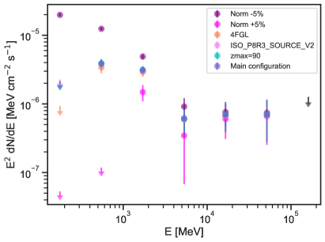
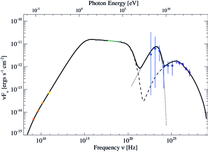
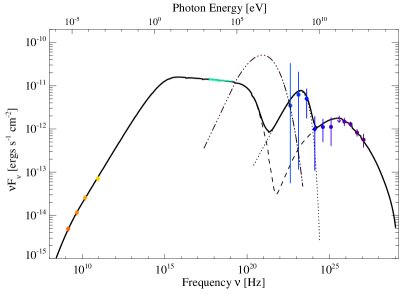

اكتشاف انبعاث أشعة غاما في نطاق GeV من PWN Kes 75 وPSR J18460258
الملخص
نُبلغ عن رصد انبعاث أشعة غاما من PWN Kes 75 وPSR J18460258. ومن خلال نمذجة توزيع الطاقة الطيفية مع إدراج بيانات Fermi-LAT الجديدة، نجد أن انبعاث أشعة غاما المرصود يرجح أن يكون مزيجًا من مساهمتي PWN والغلاف المغناطيسي للنابض. ويشبه الشكل الطيفي لهذا الانبعاث المغناطيسي الطيف في أشعة للنابضات المدفوعة بالدوران التي رصدها Fermi-LAT، وتشير نتائج نموذجنا الأفضل ملاءمة إلى أن انبعاث الغلاف المغناطيسي للنابض يمثل 1% من لمعان فقدان الدوران الحالي. وقد حاولت أعمال سابقة توصيف خصائص هذا النظام، ووجدت طاقة انفجار مستعر أعظم منخفضة وكتلة قذف SN منخفضة. نعيد تحليل الانبعاث عريض النطاق مع إدراج انبعاث Fermi الجديد، ونقارن دلالات نتائجنا بالتقارير السابقة. ويقترح نموذج انبعاث أشعة غاما الأفضل ملاءمة وجود حقل فوتوني ثان شديد السخونة ربما تولده الرياح النجمية لنجم من نوع Wolf-Rayet مطمور داخل السديم، وهو ما يدعم كتلة القذف المنخفضة التي وُجدت للسلف في التقارير السابقة، وكذلك هنا ضمن سيناريو انتقال الكتلة في نظام ثنائي.
1 مقدمة
تتكون النجوم النيوترونية في المستعرات العظمى الناتجة عن انهيار اللب (SN)، ولها طيف واسع من المظاهر الرصدية، مثل النابضات المدفوعة بالدوران (RPPs)، والأجسام المركزية المدمجة (CCOs)، والمغناطيسارات. ولا تزال العلاقة بين هذه المظاهر غير معروفة؛ فقد تكون أجسامًا منفصلة أو أطوارًا مختلفة من التطور (انظر مثلًا، Harding, 2013; Kaspi, 2018, للمراجعة). وتُرصد الغالبية العظمى من أكثر من 3000 نجم نيوتروني معروف بوصفها RPPs، حيث ينشأ الانبعاث المرتبط بها من الجسيمات النسبية المشعة ويُغذيه فقدان طاقة الدوران للنجم النيوتروني. وثمة فئة أقل شيوعًا من النجوم النيوترونية هي المغناطيسارات، التي يتطلب نشاطها الاندفاعي، وفي جميع الحالات تقريبًا، مصدر طاقة أكبر من طاقة دورانها المتاحة. وفي هذه المصادر يُعتقد أن الطاقة المنطلقة من اضمحلال الحقل المغناطيسي السطحي الفائق القوة () هي المساهم المهيمن في انبعاثها المرصود (Kaspi & Beloborodov, 2017). وعلى خلاف RPPs، تنتج المغناطيسارات اندفاعات في الأشعة السينية وأشعة غاما، ولا تُرصد عادةً وهي تُظهر نبضات راديوية. خلال العقد الماضي بدأ الحد الفاصل الواضح بين RPPs والمغناطيسارات يتلاشى، إذ تمتلك بعض النابضات المدفوعة بالدوران حقولًا مغناطيسية سطحية ثنائية القطب مستنتجة من تباطؤ الدوران وبقوة مماثلة، إلى جانب اكتشاف اندفاعات شبيهة بالمغناطيسارات في بعض النابضات الفتية. ويظهر هذا التلاشي في التمييز أيضًا في مخطط P-Pdot للنابضات، مما يضع الفصل التصنيفي بين المغناطيسارات وRPPs موضع تحدٍ. ومن بين RPPs التي افترض سابقًا أنها «اعتيادية» ومع ذلك تُظهر سلوكًا شبيهًا بالمغناطيسارات، النابض السيني J18460258، الذي يمد سديم الرياح النابضية (PWN) Kes 75 بالطاقة (Gavriil et al., 2008). ومع حقل مغناطيسي سطحي ثنائي القطب مقداره G، ولمعان فقدان دوران مقداره erg s-1، وعمر مميز قدره yr، (Gotthelf et al., 2000; Livingstone et al., 2011) كان يُعتقد أن هذا النابض RPP ذو حقل مغناطيسي سطحي عالٍ.
في 2006 رُصد هذا النابض وهو يصدر اندفاعات شبيهة بالمغناطيسارات (Gavriil et al., 2008)، كما لوحظ أن طيفه يتغير مع الزمن (Kumar & Safi-Harb, 2008; Ng et al., 2008). وبعد التغير المرصود عاد النابض إلى حالته السابقة (الهادئة)، باستثناء معامل الكبح الذي قيس حينئذ بقيمة (Livingstone et al., 2011) بدلًا من التي كانت قبل الاندفاع. وفي السنوات الأخيرة أظهر PSR J18460258 فترة أخرى من الاندفاعات الشبيهة بالمغناطيسارات (Krimm et al., 2020; Blumer et al., 2021)، قبل أن يعود إلى لمعاني الأشعة السينية «العادية».
يشير سلوك PSR J18460258 إلى احتمال أن النابضات الفتية قد تتطور إما إلى RPPs أو إلى فئة المغناطيسارات بفعل ظهور حقل مغناطيسي سطحي (مثلًا Gullón et al. 2015). ولفهم سبب إظهار بعض النابضات سلوكًا شبيهًا بالمغناطيسارات، من الضروري فهم الظروف التي تؤدي إلى تكوّن النجم النيوتروني (NS). ومن ثم فإن تحديد خصائص NS عند الولادة، وكذلك خصائص سلفه، أمر أساسي.
إذا كان خرج القدرة الدورانية من النابض قويًا بما يكفي، فيمكن أن يتكون PWN. ويتكون PWN من بلازما نسبية جدًا مؤلفة من إلكترونات وبوزيترونات حُقنت بواسطة النابض المركزي. ويولد التفاعل بين رياح النابض الأبرد والبلازما النسبية موجة صدمية تُسمى صدمة «الإنهاء». تُحقن الجسيمات بواسطة النابض المركزي وتُسرّع عند صدمة الإنهاء أثناء دخولها السديم. ويعتمد تطورها بقوة على خصائص SN وNS (Gaensler & Slane, 2006). ومن خلال دراسة التطورين الطيفي والديناميكي لـ PWN، مقترنين بالخصائص المرصودة للنابض، يمكن عندئذ الحصول على معلومات عن محيط SNR وخصائص ولادة NS، مثل فترة دورانه الابتدائية وطاقة فقدان الدوران (انظر مثلًا، Gelfand et al., 2009). ويتيح تطبيق هذا النوع من الدراسة على PSR J18460258 وPWN Kes 75 قيودًا قيّمة لفهم سبب إظهار هذا المصدر خصائص شبيهة بكل من RPP والمغناطيسار. ومن ذلك يمكننا فهم ما إذا كان هذا طورًا تطوريًا للنجوم النيوترونية الفتية والنشيطة، أم فئة منفصلة.
كان PWN Kes 75 محور دراسات متعددة من النطاق الراديوي إلى تحت الأحمر، والأشعة السينية، وطاقات TeV (انظر مثلًا، Salter et al., 1989; Reynolds et al., 2018; H. E. S. S. Collaboration et al., 2018; Temim et al., 2019; Gotthelf et al., 2021). يشع Kes 75 عبر الانبعاث السنخروتروني عند الطاقات المنخفضة، وعبر تشتت كومبتون العكسي (ICS) عند طاقات أشعة غاما TeV. إلا أن قياسات MeV–GeV ضرورية لتوصيف دقيق لطيف IC، وبالتالي لتوصيف حقل الفوتونات المحلي.
إن خصائص حقول الفوتونات، مثل درجة الحرارة وكثافة الطاقة، تتيح صورة أكمل للبيئة المحلية لـ Kes 75، وهذا بدوره يقيّد الحقل المغناطيسي لـ PWN. ولم تنجح المحاولات السابقة للبحث عن انبعاث أشعة غاما المتوافق موضعيًا مع Kes 75. إلا أن رصدًا بواسطة Fermi-LAT بمستوى 4- لانبعاث أشعة النبضي من النابض حتى 100 MeV، قد أبلغ عنه Kuiper et al. (2018). غير أن هذا العمل يركز على الطاقات فوق 100 MeV، حيث لا يُتوقع أن يكون الانبعاث النبضي ذا شأن.
في هذه الورقة نُبلغ عن الرصد المرجح لـ PWN التابع لمركب Kes 75 باستخدام Fermi-LAT. نحلل مساهمتي النابض والسديم لتوصيف انبعاث MeV–GeV المرصود. نناقش أولًا تحليل البيانات والنتائج في القسم 2. ونستخدم هذه النتائج في نمذجة PWN في القسم 3.2، ثم نناقش مكتشفاتنا ودلالاتها في القسم 4 قبل أن نختم في القسم 5.
2 تحليل Fermi-LAT والنتائج
إن Fermi-LAT (تلسكوب المساحة الكبيرة) هو تلسكوب لتحويل الأزواج يرصد فوتونات أشعة بين 20 MeV وأكثر من 1 TeV.
ومنذ بدء تشغيله في آب/أغسطس 2008، أجرى التلسكوب مسوحًا للسماء كلها كل 3 ساعة. وتعود الحساسية والدقة المكانية المحسنتان حديثًا للأداة إلى تحديث Pass 8 Atwood et al. (2013). ويقدم تحديث Pass 8، في نسخته الحالية P8R3 (Bruel et al., 2018)، قبولًا أعلى للفوتونات المرصودة ودالة انتشار نقطي (PSF) أضيق عند الطاقات الأعلى، مما يسمح بتحليل أفضل للمصادر النقطية عند الطاقات العالية. وكانت إحدى الإضافات الرئيسة في التحديث إدراج رباعيات PSF. تُقسّم الفوتونات التي يرصدها Fermi-LAT إلى أربعة رباعيات، مصنفة بحسب دقة إعادة بنائها؛ إذ تمتلك PSF 0 أدنى جودة وتمتلك PSF3 أعلى جودة11 1 https://fermi.gsfc.nasa.gov/ssc/data/analysis/documentation/Cicerone/Cicerone_LAT_IRFs/IRF_PSF.html. ويتيح ذلك للراصد تحديد جودة PSF للفوتونات، للموازنة المثلى بين الدقة المكانية والحساسية.
2.1 اختيار البيانات
حللنا بيانات تمتد سنة (من آب/أغسطس 2008 4 إلى شباط/فبراير 2020 26) باتجاه PWN Kes 75، منتقين البيانات ضمن نصف قطر قدره 20 درجة متمركز على إحداثيات الأشعة السينية لـ PWN Kes 75، المطلع المستقيم RA: 18h46m25s والميل: -02°59′13″. قيدنا اختيار بياناتنا بنطاق الطاقة 100 MeV 500 GeV. وسمحنا بزاوية سمتية عظمى قدرها 100 درجة لتقليل تلوث حافة الأرض. اختيرت البيانات بحيث تشمل فقط الفوتونات في الرباعيات الثلاث العليا من دوال الانتشار النقطي (PSFs 3 و2 و1)، وقُسمت إلى صناديق بحجم 0.1∘ لكل بكسل لتلائم الدقة عند الطاقات الأعلى، مع 8 صناديق لكل عقدة في الطاقة. نأخذ في الحسبان مصادر حتى نصف قطر 10∘ في نموذج المصدر العام. ولنمذجة الخلفية المجرية المنتشرة نستخدم القالب gilliemv07.fits، وللخلفيات المنتشرة متساوية الخواص نستخدم القالب isoP8R3SOURCEV3v1.txt. وبما أن التحليل أُجري باستخدام أكثر من 10 سنوات من البيانات، استخدمنا فهرس 4FGL-DR3 (Abdollahi et al., 2022)، النسخة gllpscv27.fit لبناء نموذج مصادرنا. أُجري التحليل باستخدام fermitools v.2.2.0، مع fermipy v1.1.6 (Wood et al., 2017).
2.2 تحليل البيانات
لاستقصاء ما إذا كان هناك رصد لـ PWN Kes 75 والنابض J18460258، نعد المصادر القريبة غير المرتبطة22 2 مصادر غير مرتبطة بأي نظير فلكي نظائر محتملة. وكان أقرب مصدر ضمن هذه المنطقة، عند 0.230∘، هو 4FGL J1846.9-0247c، موصوفًا بأنه مصدر نقطي ذو طيف LogParabola. ويجعل موقعه وطيفه منه مرشحًا جيدًا لوصف انبعاث PWN Kes 75 فعليًا، ولذلك نستبعد هذا المصدر من النموذج. وفي الفهرس الجديد، 4FGLDR3 (Abdollahi et al., 2022)، أُبلغ عن مصدر جديد قرب موقع PWN Kes 75، هو 4FGL J1845.8-0236c، على بعد 0.4 درجة، أي أبعد بكثير. ولا نعد هذا المصدر هو النظير. وبالفعل نحصل على نموذج الملاءمة الأفضل عندما يُستبدل J1846.9-0247c بمصدر نقطي عند موضع PWN Kes 75، ومع إدراج المصدر القريب غير المرتبط J1845.8-0236c، الذي ينمذج انبعاثًا منتشرًا زائدًا لا صلة له بـ PWN Kes 75.
ثم نلائم مصدرًا نقطيًا عند موقع PWN Kes 75 ونحسب خريطة إحصاء الاختبار (TS) بعد استبعاد المصدر المذكور أعلاه. ويُعرّف TS بأنه اللوغاريتم الطبيعي للفرق في الأرجحية بين فرضية ما (مثل وجود مصدر إضافي واحد) وأرجحية الفرضية الصفرية (مثل غياب المصدر):
| (1) |
يقيس TS مدى دلالة رصد مصدر بمجموعة معينة من معاملات الموقع والطيف، ويمكن تقدير دلالة مثل هذا الرصد بأخذ الجذر التربيعي لـ TS. وبالنسبة إلى رصد ذي دلالة، تكون عتبة رصد Fermi-LAT هي TS = 25 من أجل 4 DOF (درجات حرية). وكما يبين الشكل 1، يوجد TS متبقٍ ذو دلالة (TSmax 70، Npred = 2112) من مصدر نقطي متوافق موضعيًا مع Kes 75 عند الطاقات من 100 MeV – 500 GeV، وقد لُوئم بطيف قانون قدرة بمعامل index = 2.0. ولم يؤد السماح للمصدر النقطي بأن يتغير موضعه إلى تحسين الملاءمة.
أظهر فحص سابق لهذه المنطقة باستخدام نموذج 4FGLDR2، الذي لم يكن المصدر المبلغ عنه حديثًا 4FGL J1845.8-0236c مدرجًا فيه، فائضًا في تلك المنطقة. وبعد إدراج هذا المصدر في 4FGLDR3 لا يُرصد مثل هذا الفائض في التحليل المعروض في هذا العمل. ونظرًا إلى قربه من PWN Kes 75، حاولنا تحسين الموقع لكل من PWN Kes 75 والمصدر الجديد بتنفيذ تحليل توطين على كلا المصدرين في fermipy. ولم يُعثر على موقع أفضل ضمن 0.5 درجة من أي من المصدرين.
على الرغم من أن PWN Kes 75 أصغر بكثير من PSF لأدوات Fermi-LAT (0.15° عندما E 10 GeV)33 3 https://fermi.gsfc.nasa.gov/science/instruments/table1-1.html، فقد اختبرنا امتداد المصدر باستخدام قالبي الامتداد RadialDisk وRadialGaussian. وباستخدام قالب القرص الشعاعي نجد امتدادًا أفضل ملاءمة قدره درجة وحدًا علويًا عند 95 قدره درجة مع . أما بالنسبة إلى قالب الغاوسي الشعاعي، فنجد حجمًا قدره ، وحدًا علويًا عند 95 قدره درجة مع . وليست هذه الامتدادات ذات دلالة، ونستنتج أنه لا توجد بينة على امتداد المصدر. واختبرنا كذلك نتائج الامتداد بتغيير فيض النموذج المجري المنتشر بمقدار (كما نفعل للفيض المقاس، انظر أدناه)، ووجدنا تغيرات كبيرة في نتائج الامتداد. ولأن PWN Kes 75 يقع في منطقة معقدة من الانبعاث المنتشر، فإننا نفسر نتائج الامتداد على أنها غير ذات دلالة ونفضل بدلًا من ذلك نموذج المصدر النقطي.
ولاستقصاء الارتيابات المنهجية في الخلفية المجرية المنتشرة والمساحة الفعالة، حللنا البيانات باستخدام الإعدادات الآتية:
-
•
فهرس 4FGL بدلًا من 4FGL-DR3،
-
•
النسخة السابقة من دالة استجابة الأداة (IRF) في Pass 8، مع النسخة الصادرة حديثًا للخلفية المنتشرة متساوية الخواص P8R3SOURCEV2، و
-
•
تقليل الزاوية السمتية العظمى إلى 90 درجة، بما يخفض أكثر أي تلوث من حافة الأرض.
-
•
تغيير تطبيع الخلفية المنتشرة بمقدار .
تُعرض الأطياف الناتجة من استخدام إعدادات مختلفة في تحليل البيانات في الشكل 2، وتظهر توافقًا جيدًا بعضها مع بعض. وعند تطبيق فهرس 4FGL، أدرجنا المصدر المبلغ عنه حديثًا 4FGL J1845.8-0236c للحفاظ على الاتساق مع نماذج المصادر الأخرى. وفي بقية هذا التقرير نعتمد الحدود العظمى والصغرى (بما في ذلك الحدود العليا) من الإعدادات المختبرة لتمثيل الخطأ المنهجي (انظر الجدول 1).
يصف الطيف المستحصل مركب PWN كله، أي كلًا من PWN والنابض. وفي القسم 3.2 نجد الطاقات التي يهيمن فيها النابض ( MeV GeV) وتلك التي يهيمن فيها PWN ( GeV GeV). لذلك نختبر أيضًا نماذج طيفية تصف كلا المكونين على أفضل وجه في نموذج مصدر Fermi-LAT. ويُوصف الطيف عند الطاقات MeV GeV على أفضل وجه باستخدام نموذج PLEC2 (قانون قدرة مع قطع فوق أسي 244 4 https://fermi.gsfc.nasa.gov/ssc/data/analysis/scitools/source_models.html##PLSuperExpCutoff2)، ونجد تحسنًا في الملاءمة مقارنة بملاءمة قانون قدرة بسيط. كما يزداد TS الخاص بـ PWN Kes 75 في هذا النطاق الطاقي من 73 إلى 89. وتكون معاملات الملاءمة الأفضل له index1 = ، وindex2 = ، ومعامل الأس = ، وعامل تمهيدي قدره . أما البيانات فوق 5 GeV فتُوصف على أفضل وجه بقانون قدرة له index = وprefactor = ، مع TS قدره 16.5. وفي ما يلي من هذا العمل ننمذج الطيف الكامل لمركب PWN، مستخدمين الفيوض المستحصلة المعطاة في الجدول 1.
نلاحظ أن الطيف المستحصل لـ PWN Kes 75 يشبه كثيرًا طيف المصدر غير المرتبط 4FGL J1846.9-0247c الواقع على بعد 0.230 درجات من إحداثيات الأشعة السينية لـ PWN Kes 75. وبالنظر إلى طيف المصدر المستحصل (انظر القسم 3.1)، فإن رصد PWN Kes 75 عند طاقات 0.332 TeV وما فوق في مسح HESS للمستوى المجري (H. E. S. S. Collaboration et al., 2018) يجعلنا نستنتج أن المصدر غير المرتبط 4FGL J1846.9-0247c يصف انبعاثًا من PWN Kes 75.

3 نمذجة PWN
3.1 التحليل الطيفي
الفيوض المستحصلة أعلاه والمعطاة في الجدول 1 تخص ملاءمة مصدر نقطي في أشعة عند إحداثيات الأشعة السينية لـ PWN Kes 75. وفوق ذلك، وبما أن مركب PWN غير محلول بواسطة Fermi-LAT، فإن هذا المصدر يحتوي على انبعاث من PWN ومن النابض. ونظرًا إلى عدم رصد انبعاث أشعة سينية غير حراري من قشرة بقايا المستعر الأعظم (SNR) (Gotthelf et al., 2021)، فلا يبدو مرجحًا أن تسهم مساهمة كبيرة. وبالنظر إلى عدم الرصد السابق لانبعاث أشعة غاما النبضي في نطاق الطاقة المحلل في هذا العمل (Kuiper et al., 2018)، نفترض انبعاثًا نابضيًا مغناطيسيًا نمطيًا لنابضات أشعة غاما الأخرى، لا ينشأ بالضرورة من آلية الانبعاث نفسها المسؤولة عن الرصد عند الطاقات الأدنى ( 100 MeV). ويُرصد انبعاث أشعة من نابضات أشعة غاما النمطية أساسًا دون ، ويُوصف جيدًا بقانون قدرة أو بقانون قدرة مع قطع أسي (Abdo et al., 2013). وكما هو موضح أدناه، ننمذج انبعاث أشعة المرصود من هذا المصدر بقانون قدرة مع قطع أسي نمطي للنابض، وانبعاث أشعة من PWN كما يتنبأ به نموذجنا المبين أدناه.
3.2 نموذج PWN
بما أن تطور PWN داخل SNR يعتمد بشدة على خصائص النجم السلف، وانفجار المستعر الأعظم، والنجم النيوتروني عند الولادة، فإن نمذجة PWN تتيح الحصول على معلومات عن المذكور أعلاه. وتُعد النماذج وحيدة المنطقة حاليًا أفضل وسيلة لتتبع التطورين الديناميكي والطيفي لـ PWN. نستخدم النموذج التطوري كما وصفه Gelfand et al. (2009) للحصول على قيم الخصائص المعطاة في الجدول 2. وقد وصف Hattori et al. (2020) بتفصيل الإجراء المستخدم لملاءمة الخصائص المرصودة لـ PWN مع القيم التي يتنبأ بها هذا النموذج لمجموعة معينة من معاملات الإدخال، ونحيل القارئ إلى تلك الأوراق لوصف موسع للنموذج وتطبيقاته. ونشير إلى أن هذا النموذج وإجراءات الملاءمة نجحت في إعادة إنتاج خصائص عدة PWNe، لكل منها مجموعات مختلفة من الخصائص المقاسة (مثلًا، Hattori et al., 2020; Gotthelf et al., 2014; Gelfand et al., 2015, 2013).
تُدرج الخصائص التي نهدف إلى إعادة إنتاجها بهذا النموذج في الجدول 1، وتشمل قياسات فيض Fermi-LAT المشتقة في §2.2. إن إضافة قياسات الفيض هذه إلى توزيع الطاقة الطيفية (SED) القائم لـ PWN Kes 75 تتيح لنا فصل مكون PWN عن المكون النابضي المحتمل في رصد Fermi-LAT. وبالنسبة إلى النابض نفترض مساهمة فيض في انبعاث GeV يمكن وصفها بقانون قدرة ذي قطع أسي
| (2) |
الذي يعطي فيض النابض بوحدات ergs cm -1 s-1، حيث هو التطبيع عند 1 GeV بوحدات فوتون s-1 cm-1 GeV-1، والطاقة E معطاة بوحدة GeV، و هو معامل الفوتونات، وEcut هي طاقة القطع بوحدة GeV. وللاتساق مع التحليلات السابقة لهذا المصدر (Gelfand et al., 2014; Reynolds et al., 2018; Gotthelf et al., 2021)، نفترض أن معامل كبح النابض ثابت عند (Livingstone et al., 2011)، وهي القيمة المقاسة قبل الاندفاعات المرصودة في 2009، طوال تطوره.
ومن نمذجتنا لمكون النابض، نحصل على كفاءة أشعة غاما قدرها ، وطاقة قطع قدرها GeV، ومعامل طيفي قدره (انظر الجدول 2).
ومع أربعة معاملات حرة في نمذجتنا، يبلغ نموذجنا الأفضل ملاءمة (انظر الشكل 3) قيمة كاي-تربيع () مقدارها 2.4.
يبين نموذج الملاءمة الأفضل أن طاقات Fermi دون GeV يصفها المكون النابضي في النموذج، في حين أن الطاقات فوق GeV يصفها مكون PWN في نموذجنا.
وتُعطى قيم معاملات الإدخال لنموذج الملاءمة الأفضل في الجدول 1، وستُناقش نتائج النمذجة بمزيد من التفصيل في القسم 4.2.
| Property | Observed | Model | Citation |
| PSR J18460258 | |||
| Fixed | Livingstone et al. (2011) | ||
| (yr) | 723 | Fixed | |
| Fixed | |||
| (ms) | 326.57 | - | Livingstone et al. (2011) |
| Pulsar Wind Nebula | |||
| Angular radius | |||
| Angular expansion rate | Reynolds et al. (2018) | ||
| (mJy) | 341 | Salter et al. 1989 | |
| (mJy) | 254 | Salter et al. 1989 | |
| (mJy) | 168 | Salter et al. 1989 | |
| (mJy) | 86 | Bock & Gaensler 2005 | |
| (210 keV)a | Gotthelf et al. (2021) | ||
| (255 keV) | Gotthelf et al. (2021) | ||
| (0.176 GeV)a | ( | This work | |
| (0.549 GeV)a | ( | This work | |
| (1.71 GeV)a | ( | This work | |
| (5.32 GeV)a | ( | This work | |
| (16.6 GeV)a | ( | This work | |
| (51.6 GeV)a | ( | This work | |
| (160 GeV)a | This work | ||
| (0.332 TeV)a | H. E. S. S. Collaboration et al. (2018) | ||
| (0.787 TeV)a | H. E. S. S. Collaboration et al. (2018) | ||
| (1.96 TeV)a | H. E. S. S. Collaboration et al. (2018) | ||
| (4.87 TeV)a | H. E. S. S. Collaboration et al. (2018) | ||
| Supernova Remnant | |||
| Angular radius | |||
| Distance | () kpc | kpc | Verbiest et al. (2012) |
| Property | Derived in Gotthelf et al. (2021) | Derived in this work |
| Supernova Explosion Energy | ||
| Supernova Ejecta Mass | 0.51 M⊙ | 0.37 M⊙ |
| ISM Density | 0.56 cm-3 | 0.63 cm-3 |
| Wind Magnetization | ||
| Minimum Energy of Injected Leptons | 2.0 GeV | 1.9 GeV |
| Break Energy of Injected Leptons | 2.042 TeV | 1.92 TeV |
| Maximum Energy of Injected Leptons | 1.00 PeV | 1.11 PeV |
| Low-Energy Particle Index | 1.73 | 1.17 |
| High-Energy Particle Index | 3.04 | 3.05 |
| Temperature of External Photon Field 1 | 32 K | 32 K |
| Normalization of External Photon Field 1 | ||
| Temperature of External Photon Field 2 a | K | |
| Normalization of External Photon Field 2 a | ||
| Pulsar | ||
| Pulsar Spindown Timescale | 398 years | 432 years |
| Pulsar Initial Spin-down Luminosity | ergs s-1 | ergs s-1 |
| Pulsar Initial Spin Period | ms | |
| Pulsar photon index (-rays) a | 1.29 | |
| Pulsar cutoff Energy Ecut a | GeV | |
| Gamma-ray efficiency a | 0.97% | |
| Gamma-ray Luminosity ( GeV) | ergs s-1 | |
| / degrees of freedom | 2.4 / 4 | |

4 مناقشة
كما نوقش في القسم 3.2، تتيح لنا نمذجة الخصائص الديناميكية والطيفية المرصودة لـ PWN Kes 75 تقدير خصائص النابض المرتبط به، سواء خصائص ولادته أو كفاءة أشعة وطيف انبعاثه المغناطيسي. واشتققنا خصائص رياح النابض المدفوعة بفقدان طاقة دوران النابض، وانفجار المستعر الأعظم السلف، وبيئته. وفي القسم 4.1، نناقش الانبعاث فائق الطاقة (VHE) للنابض ونقارن الخصائص المرصودة لانبعاث أشعة المغناطيسي لهذا النابض بما يُرصد من نابضات أخرى مدفوعة بالدوران. وفي القسم 4.2، نناقش دلالة الخصائص المشتقة بالنسبة إلى انفجار المستعر الأعظم. وأخيرًا، في القسم 4.3، نناقش المغزى الفيزيائي لقياساتنا المتعلقة ببيئة هذا المصدر.
4.1 انبعاث النابض فائق الطاقة
في تحليلنا لمركب PWN+PSR، عند الطاقات فوق 100 MeV، نفترض للنابض قانون قدرة ذا قطع أسي. ونجد توافقًا جيدًا مع الفيض المرصود في نطاق 100 MeV 2 GeV، ونستنتج أن الفيض في هذا النطاق الطاقي يُحتمل أن يصدر من الغلاف المغناطيسي للنابض. وفي الأقسام الآتية يُقارن هذا الانبعاث المغناطيسي بانبعاث MeV المرصود منه وبنابضات أشعة غاما الواردة في فهرس نابضات Fermi الثاني (Abdo et al., 2013).
4.1.1 مقارنة مع انبعاثه النبضي في نطاق MeV
منذ اكتشاف النابض J18460258 في الأشعة السينية بواسطة Gotthelf et al. (2000)، أُجريت دراسات عديدة تتصل بانبعاثه النبضي عالي الطاقة (2 keV). وأبلغ Kuiper & Hermsen (2009) عن قياس للطيف النبضي عالي الطاقة للنابض في حزمة keV، وكشف عن خلل كبير في تسارع الدوران عند بداية الاندفاعات الشبيهة بالمغناطيسارات وتعزز في فيض الأشعة السينية في 2006 (Gavriil et al., 2008; Kumar & Safi-Harb, 2008). وأُجريت أول محاولة لرصد النابض عند طاقات أعلى، في حزمة MeVGeV الخاصة بـ Fermi-LAT، بواسطة Parent et al. (2011) باستخدام أول 20 شهرًا من البيانات، وأبلغت عن عدم رصد PSR J18460258 للطاقات فوق 100 MeV. وفي دراسة لاحقة أجراها Kuiper et al. (2018)، استخدمت 8 سنوات (من آب/أغسطس 2007 إلى أيلول/سبتمبر 28 – 2016 4) من بيانات Fermi وحلًا توقيتيًا متعدد الأدوات للنابض مشتقًا من أرصاد الأشعة السينية التي تغطي هذه التواريخ، وأُبلغ عن رصد بمستوى 4.2 لانبعاث نبضي من PSR J18460258 في حزمة MeV، مع عدم رصد انبعاث نبضي عند طاقات فوتونية أكبر من 100 MeV، وطيف نبضي موصوف جيدًا بمنحنى log-parabola تبلغ ذروته عند طاقة فوتونية قدرها MeV. ولا يحتوي رصدنا عند الطاقات فوق 100 MeV على عدد كاف من الفوتونات يسمح بتحليل النبضات.
يبين الشكل 4 نموذج SED الخاص بنا مع تراكب نموذج الفيض النبضي للنابض المشتق في Kuiper et al. (2018). وتتسق نقطة الفيض في أدنى نطاق طاقي لدينا (المتمركزة عند 0.176 GeV، انظر الجدول 1)، المرصودة في تحليلنا لبيانات Fermi، مع هذا النموذج. غير أن الفيض المقاس عند طاقات فوتونية أعلى لا يتسق مع استقراء الانبعاث النبضي في MeV الذي أبلغ عنه Kuiper et al. (2018)، مما يشير إلى أن الانبعاث الأعلى طاقة ( 100 MeV) لا ينشأ من آلية الانبعاث نفسها. ويُلاحظ اختلاف مشابه في SED للانبعاث النبضي من نابض السرطان في هذه الطاقة، (انظر الشكل 8، Kuiper et al., 2018)، وهو أيضًا لا يمكن وصفه بقطع مكافئ واحد. والمكون في نطاق GeV المبلغ عنه هنا مشابه لمكون تنبأ به Harding & Kalapotharakos (2017) لـ PSR J18460258. ففي نمذجتهم لانبعاث النابض VHE من J18460258، يتنبؤون بمكون انبعاث في نطاق GeV ناتج عن إشعاع الانحناء، ويشبه شكله المتوقع نوعيًا ما يُرصد هنا (الشكل 3، Harding & Kalapotharakos (2017)).
4.1.2 مقارنة مع 2PC
لتحديد ما إذا كان انبعاث أشعة المغناطيسي من J18460258 قابلًا للمقارنة مع انبعاث النابضات المدفوعة بالدوران غير المرتبطة بنشاطات شبيهة بالمغناطيسارات، نقارن خصائص النابض المستحصلة من نمذجتنا بخصائص نابضات فتية ونشيطة أخرى مدفوعة بالدوران كما جُمعت في فهرس نابضات Fermi الثاني (2PC، Abdo et al., 2013)55 5 نظرًا إلى منهجية الرصد في 2PC، فإن الفهرس منحاز نحو النابضات الراديوية.. وتُعطى الخصائص التي نستخلصها للنابض ونقارنها بالنابضات في Abdo et al. (2013) في الجدول 2. وفي Abdo et al. (2013)، تصف الأشكال من 7 إلى 10 خصائص النابضات في العينة المرصودة التي يمكننا مقارنة خصائصنا المستحصلة بها. ويؤخذ الحقل المغناطيسي عند أسطوانة الضوء من فهرس ATNF، ( G، Manchester et al., 2005)، وتُعطى لمعانية أشعة غاما في نطاق GeV المشتقة في هذا العمل في الجدول 2.
إن كفاءة أشعة غاما البالغة نمطية لنابضات أشعة غاما ذات طاقة فقدان دوران مشابهة. ويبدو أن لمعانية أشعة غاما الخاصة به ( erg s-1) تقع عند الطرف الأدنى، وهي أكثر اتساقًا مع من علاقة خطية، بما يتوافق مع نتائج 2PC بشأن نابضات أشعة غاما. ويبدو أن معامل الفوتونات المستحصل، ، أصلب من معظم النابضات ذات طاقة فقدان دوران مشابهة، لكنه يقع ضمن مدى القيم المرصودة في هذه العينة. كما تُلاحظ طاقة القطع في الطيف، GeV، مقارنة بحقلها المغناطيسي عند أسطوانة الضوء، على أنها مشابهة لنابضات أخرى في منطقة G.
وتتفق خصائص النابض المستحصلة جيدًا مع ما يُستحصل للعينة الأكبر من النابضات الباعثة لأشعة غاما، مما يدعم الافتراض بأن هذا المكون الإضافي ينشأ في الغلاف المغناطيسي للنابض، ويشير إلى أن آلية الانبعاث الفيزيائية الكامنة مشابهة لتلك المرصودة من النابضات المدفوعة بالدوران.

4.2 نموذج PWN
في Gotthelf et al. (2021) نمذجنا PWN Kes 75 بعد إضافة قياسات أشعة سينية جديدة كما رُصدت في ذلك العمل. ومن نمذجتنا نستخلص أن الخصائص الديناميكية والطيفية لـ PWN Kes 75 تُوصف على أفضل وجه بأنها تشكلت في انفجار مستعر أعظم منخفض الطاقة وذي كتلة قذف منخفضة (انظر الجدول 2، ergs، M⊙). وهذا مشابه جدًا، وإن كان أدنى قليلًا، لما اشتقه Gotthelf et al. (2021). ويبدو أن أعمالًا أخرى تفضل أيضًا طاقة انفجار وكتلة قذف منخفضتين (Leahy & Tian, 2008). ونقارن كذلك نتائجنا بنتائج النمذجة المعروضة في Gotthelf et al. (2021)، مقدمين مقارنة مباشرة لتأثير قياسات Fermi-LAT في SED وتطور PWN. ويُظهر الجدول 2 أن إضافة انبعاث GeV تكشف الحاجة إلى حقل فوتوني إضافي عالي الحرارة لـ IC. وبالإضافة إلى الحقل الفوتوني الإضافي، يورد هذا العمل مغنطة رياح أعلى مقارنة بالدراسات السابقة (انظر الجدول 2). وهذا نتيجة انبعاث IC المتزايد الذي يتطلبه رصدنا لهذا المصدر بواسطة Fermi-LAT. وتؤدي خسائر IC الإشعاعية الإضافية المرتبطة بهذا الانبعاث إلى خفض طاقة الجسيمات داخل PWN، ومن ثم تُحتاج رياح أشد مغنطة لإنتاج اللمعان السنخروتروني نفسه. وتؤثر مغنطة الرياح المتزايدة أيضًا في معامل الجسيمات منخفض الطاقة، الذي وُجد أنه أدنى في هذا العمل. وفوق ذلك، يؤدي مقياس زمن تباطؤ دوران النابض الأطول قليلًا إلى فترة دوران ابتدائية أطول.
4.3 دلالات حقل IC الإضافي
يوفر نطاق الطاقة الذي يرصده Fermi-LAT رؤية ممتازة لجزء ICS من طيف PWN Kes 75، وهو جزء لم تسبُره الأرصاد السابقة التي أجراها HGPS (H. E. S. S. Collaboration et al., 2018). ومع إضافة نقاط الفيض في نطاق الطاقة 100 MeV 500 GeV، نحتاج إلى حقل فوتوني خلفي ثان لإعادة إنتاج جزء IC من الطيف في نمذجتنا على نحو صحيح.
وكما في حالة Gotthelf et al. (2021)، يمتلك أحد حقول الفوتونات درجة حرارة ، وهي متفقة جيدًا مع درجة حرارة الغبار المحيط (Temim et al., 2019). إلا أن نتيجة Fermi-LAT الخاصة بنا تتطلب حقلًا فوتونيًا إضافيًا عالي الحرارة، مع K وكثافة طاقة:
| (3) | |||||
| (4) |
حيث إن هو ثابت الإشعاع، وهي أكبر بعدة رتب مقدار من كثافة طاقة حقل الإشعاع بين النجمي المحلي عند طاقات فوق البنفسجية (UV) التي ينبغي أن يبلغ عندها هذا الانبعاث ذروته (مثلًا، Habing 1968).
ولتحديد المصدر المحتمل لمثل هذا الحقل الفوتوني الخلفي الشديد، نحسب أولًا الطاقة الكلية للفوتونات داخل PWN، بافتراض أنه كرة نصف قطرها للقيم المعطاة في الجدول 1، بحيث وبافتراض أن هذه الفوتونات تعبر PWN في زمن ، فإن المعدل الذي تُحقن به هذه الفوتونات في PWN، ، هو:
| (5) |
وبافتراض أن معدل حقن الطاقة ودرجة حرارة لهذا الحقل الفوتوني الخلفي الإضافي يقابلان لمعانية مصدره ودرجة حرارته (الفعالة)، فإن كلتا القيمتين قابلتان للمقارنة بما يُرصد من نجوم Wolf-Rayet (مثلًا، Aadland et al. 2022b, a; Abbott 2004; Tramper et al. 2015)، مما يشير إلى وجود مثل هذا النجم داخل PWN. وإن كان موجودًا، فسيكون لهذا النجم قدر مطلق (مثلًا، Aadland et al. 2022b). وباستخدام العلاقة المشتقة بين الامتصاص في الأشعة السينية والانطفاء البصري (مثلًا، Foight et al. (2016))، فإن كثافة عمود الهيدروجين بين النجمي باتجاه Kes 75 (؛ مثلًا، Gotthelf et al. 2021) تقتضي انطفاءً . وعند مسافة (الجدول 1)، سيكون القدر الظاهري لنجم Wolf-Rayet داخل Kes 75 مساويًا لـ ، أي أخفت من المسوح الحالية لهذا الحقل (مثلًا، Pan-STARRS؛ Magnier et al. 2020). وإذا كان مثل هذا النجم موجودًا، فمن المحتمل أنه كان الرفيق الثنائي للسلف النجمي، وسيقدم معلومات مهمة عن خصائصه وتطوره قبل الانفجار.
5 استنتاجات
في هذا التقرير نحلل الانبعاث المرتبط بالمصدر المجهول 4FGL J1846.9-0247c، المتوافق موضعيًا مع موقع PWN Kes 75. ويشير إجراء تحليل مفصل للمصدر إلى أصل من نوع PWN+PSR صادر عن PWN Kes 75. ومن نمذجتنا للطيف المستحصل، نشتق الخصائص الفيزيائية لـ PWN، وكذلك خصائص أشعة غاما للنابض. وتتسق معاملات أشعة غاما للنابض مع ما يُرصد في الانبعاث النبضي من نابضات أشعة غاما المعروفة. ويمكن تفسير المكون المغناطيسي الذي نرصده بمكون إشعاع انحناء حول هذه الطاقات كما تنبأ به لهذا المصدر Harding & Kalapotharakos (2017).
نجد أن قياسات فيض Fermi-LAT توفر قيودًا قيّمة على حقول الفوتونات المحلية، وعندما تُدمج مع خصائص السلف المشتقة، فإنها تدعم سيناريو كان فيه السلف ضمن نظام ثنائي قبل أن يتحول إلى مستعر أعظم.
ويقترح حقل فوتونات IC عالي الحرارة وجود نجم Wolf-Rayet مطمور داخل PWN. وعندئذ كان هذا النجم WR على الأرجح الرفيق الثنائي لسلف PWN Kes 75.
وفوق ذلك، تؤدي إضافة قياسات فيض Fermi-LAT إلى الحاجة إلى مغنطة رياح أعلى مما أُبلغ عنه سابقًا في Gotthelf et al. (2021)، مما يؤكد أهمية Fermi-LAT في دراسة PWNe.
References
- Aadland et al. (2022a) Aadland, E., Massey, P., Hillier, D. J., & Morrell, N. 2022a, ApJ, 924, 44
- Aadland et al. (2022b) Aadland, E., Massey, P., John Hillier, D., et al. 2022b, ApJ, 931, 157
- Abbott (2004) Abbott, J. B. 2004, PhD thesis, University College London, UK
- Abdo et al. (2013) Abdo, A. A., Ajello, M., Allafort, A., et al. 2013, ApJS, 208, 17
- Abdollahi et al. (2022) Abdollahi, S., Acero, F., Baldini, L., et al. 2022, ApJS, 260, 53
- Atwood et al. (2013) Atwood, W., Albert, A., Baldini, L., et al. 2013, arXiv e-prints, arXiv:1303.3514
- Blumer et al. (2021) Blumer, H., Safi-Harb, S., McLaughlin, M. A., & Fiore, W. 2021, ApJ, 911, L6
- Bock & Gaensler (2005) Bock, D. C. J., & Gaensler, B. M. 2005, ApJ, 626, 343
- Bruel et al. (2018) Bruel, P., Burnett, T. H., Digel, S. W., et al. 2018, arXiv e-prints, arXiv:1810.11394
- Foight et al. (2016) Foight, D. R., Güver, T., Özel, F., & Slane, P. O. 2016, ApJ, 826, 66
- Gaensler & Slane (2006) Gaensler, B. M., & Slane, P. O. 2006, ARA&A, 44, 17
- Gavriil et al. (2008) Gavriil, F. P., Gonzalez, M. E., Gotthelf, E. V., et al. 2008, Science, 319, 1802
- Gelfand et al. (2013) Gelfand, J., Slane, P., & Temim, T. 2013, in The Fast and the Furious: Energetic Phenomena in Isolated Neutron Stars, Pulsar Wind Nebulae and Supernova Remnants, ed. J. U. Ness, 24
- Gelfand et al. (2014) Gelfand, J. D., Slane, P. O., & Temim, T. 2014, Astronomische Nachrichten, 335, 318
- Gelfand et al. (2015) —. 2015, ApJ, 807, 30
- Gelfand et al. (2009) Gelfand, J. D., Slane, P. O., & Zhang, W. 2009, ApJ, 703, 2051
- Gotthelf et al. (2021) Gotthelf, E. V., Safi-Harb, S., Straal, S. M., & Gelfand, J. D. 2021, ApJ, 908, 212
- Gotthelf et al. (2000) Gotthelf, E. V., Vasisht, G., Boylan-Kolchin, M., & Torii, K. 2000, ApJ, 542, L37
- Gotthelf et al. (2014) Gotthelf, E. V., Tomsick, J. A., Halpern, J. P., et al. 2014, ApJ, 788, 155
- Gullón et al. (2015) Gullón, M., Pons, J. A., Miralles, J. A., et al. 2015, MNRAS, 454, 615
- H. E. S. S. Collaboration et al. (2018) H. E. S. S. Collaboration, Abdalla, H., Abramowski, A., et al. 2018, A&A, 612, A1
- Habing (1968) Habing, H. J. 1968, Bull. Astron. Inst. Netherlands, 19, 421
- Harding (2013) Harding, A. K. 2013, Frontiers of Physics, 8, 679
- Harding & Kalapotharakos (2017) Harding, A. K., & Kalapotharakos, C. 2017, in Proceedings of the 7th International Fermi Symposium, 6
- Hattori et al. (2020) Hattori, S., Straal, S. M., Zhang, E., et al. 2020, ApJ, 904, 32
- Kaspi (2018) Kaspi, V. M. 2018, in Pulsar Astrophysics the Next Fifty Years, ed. P. Weltevrede, B. B. P. Perera, L. L. Preston, & S. Sanidas, Vol. 337, 3–8
- Kaspi & Beloborodov (2017) Kaspi, V. M., & Beloborodov, A. M. 2017, ARA&A, 55, 261
- Krimm et al. (2020) Krimm, H. A., Lien, A. Y., Page, K. L., et al. 2020, GRB Coordinates Network, 28187, 1
- Kuiper & Hermsen (2009) Kuiper, L., & Hermsen, W. 2009, A&A, 501, 1031
- Kuiper et al. (2018) Kuiper, L., Hermsen, W., & Dekker, A. 2018, MNRAS, 475, 1238
- Kumar & Safi-Harb (2008) Kumar, H. S., & Safi-Harb, S. 2008, ApJ, 678, L43
- Leahy & Tian (2008) Leahy, D. A., & Tian, W. W. 2008, A&A, 480, L25
- Livingstone et al. (2011) Livingstone, M. A., Ng, C. Y., Kaspi, V. M., Gavriil, F. P., & Gotthelf, E. V. 2011, ApJ, 730, 66
- Magnier et al. (2020) Magnier, E. A., Sweeney, W. E., Chambers, K. C., et al. 2020, ApJS, 251, 5
- Manchester et al. (2005) Manchester, R. N., Hobbs, G. B., Teoh, A., & Hobbs, M. 2005, AJ, 129, 1993
- Ng et al. (2008) Ng, C. Y., Slane, P. O., Gaensler, B. M., & Hughes, J. P. 2008, ApJ, 686, 508
- Parent et al. (2011) Parent, D., Kerr, M., den Hartog, P. R., et al. 2011, ApJ, 743, 170
- Reynolds et al. (2018) Reynolds, S. P., Borkowski, K. J., & Gwynne, P. H. 2018, ApJ, 856, 133
- Salter et al. (1989) Salter, C. J., Reynolds, S. P., Hogg, D. E., Payne, J. M., & Rhodes, P. J. 1989, ApJ, 338, 171
- Temim et al. (2019) Temim, T., Slane, P., Sukhbold, T., et al. 2019, ApJ, 878, L19
- Tramper et al. (2015) Tramper, F., Straal, S. M., Sanyal, D., et al. 2015, A&A, 581, A110
- Verbiest et al. (2012) Verbiest, J. P. W., Weisberg, J. M., Chael, A. A., Lee, K. J., & Lorimer, D. R. 2012, ApJ, 755, 39
- Wood et al. (2017) Wood, M., Caputo, R., Charles, E., et al. 2017, in International Cosmic Ray Conference, Vol. 301, 35th International Cosmic Ray Conference (ICRC2017), 824